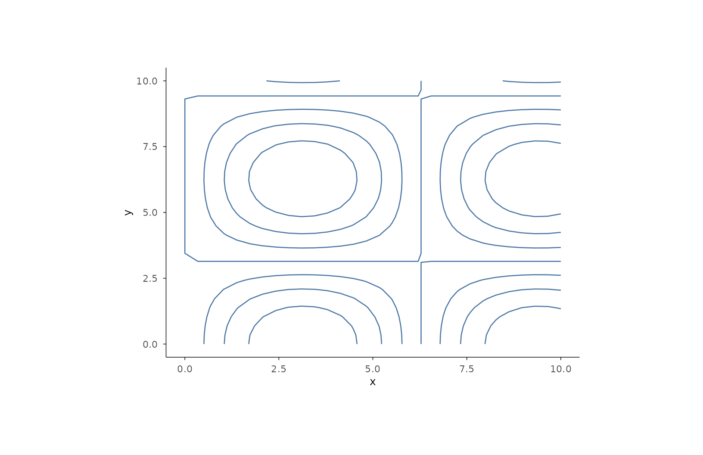
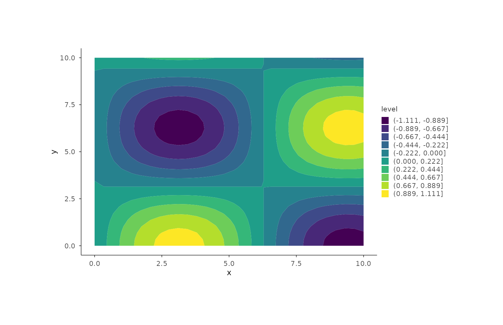

Draws contour lines of a 2D scalar field: the data must carry a z
aesthetic (value at each x/y grid point). Use filled = TRUE for
banded fills. Where mark_density_2d() estimates density from points,
mark_contour() renders an observed field (elevation, temperature,
a fitted surface).
Usage
mark_contour(
plot,
mapping = NULL,
data = NULL,
position = NULL,
...,
filled = FALSE,
bins = NULL,
breaks = NULL,
rasterize = FALSE,
rasterize_dpi = 300,
rasterize_dev = "cairo"
)Arguments
- plot
A plotit object
- mapping
Optional new aesthetics (must include
x,y,z)- data
Optional data for this layer
- position
Position adjustment.
- ...
Other arguments passed to the underlying geom
- filled
If
TRUE, draw filled contour bands viageom_contour_filled; otherwise contour lines viageom_contour.- bins
Number of contour bins.
- breaks
Numeric vector of exact contour levels; overrides
bins.- rasterize
If
TRUE, rasterize viaggrastr::rasterise().- rasterize_dpi
DPI for rasterization (default 300).
- rasterize_dev
Graphics device for rasterization (default
"cairo").
Details
Filled bands map fill to a computed level factor owned by this closed
statistical mark; the band scale defaults to discrete viridis and can be
replaced by chaining scale_fill() afterwards.
Examples
df <- expand.grid(x = seq(0, 10, length.out = 30), y = seq(0, 10, length.out = 30))
df$z <- with(df, sin(x / 2) * cos(y / 2))
plotit(df, encode(x = x, y = y, z = z)) |>
mark_contour(breaks = seq(-1, 1, by = 0.25))

plotit(df, encode(x = x, y = y, z = z)) |>
mark_contour(filled = TRUE, bins = 10)
